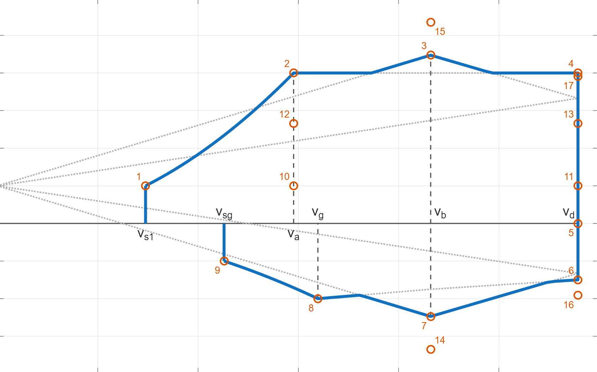
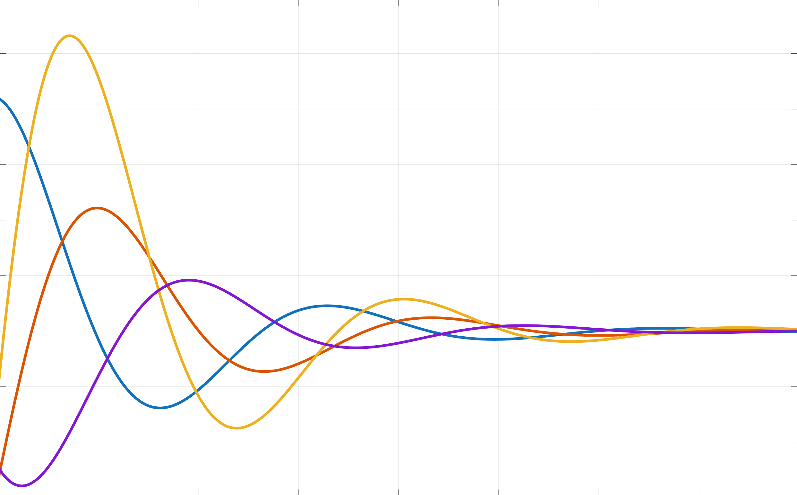
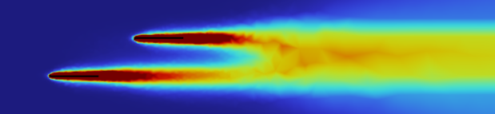
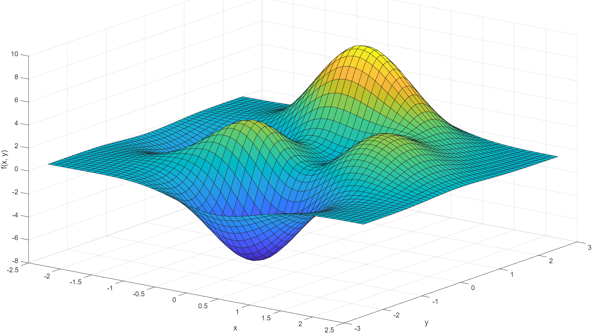
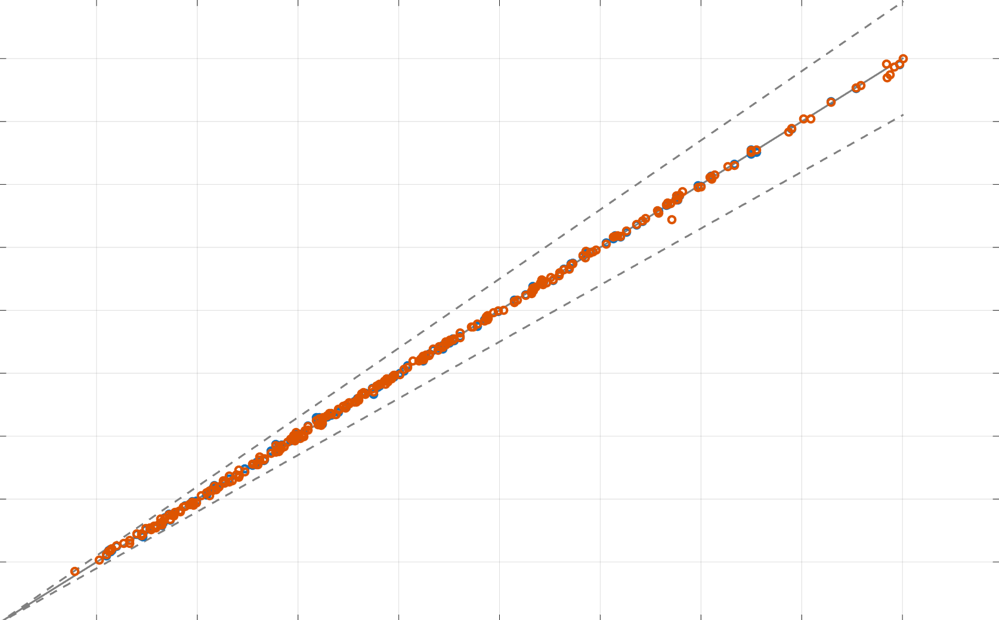

About Me
I am currently pursuing a Master's degree in aerospace engineering at the Czech Technical University in Prague, with additional academic experience at Delft University of Technology. Throughout my studies, I have been a member of a Formula Student team, where I have focused on the end-to-end development of a traction battery, particularly on its thermal management and cooling simulations.
Formula Student Experience
As soon as I started my studies, I joined our electric Formula Student team. Back then, the school had 2 teams separately building a combustion and an electric car. These teams merged in 2024 into a single team. I joined the electric team, since I was studying electrical engineering at the time. Only later did I realize my passion for the mechanical systems, which led me to manage the development of the traction battery for the newly merged team's car.eForce Prague Formula
(2019-2025)
PCB design | Structural design | Thermal Management | CFD simulations | Traction Battery design | Data Analysis
I started my involvement with eForce as an electrical engineer, drawing PCBs for the low-voltage system. In time, I moved on to the powertrain team, where i participated in the development of our custom SiC-based motor controller. My interest in batteries later helped me become the leader of the accumulator team, where I was in charge of designing the traction battery from scratch and managing its manufacture.
In my long time as team member, I have also had responsibilities outside of the technical scope. Negotiations with partners and sponsors is essential to secure some of the team's resources. I also spent a year as the leader of the LV Electronics team, which mainly required skills in project management and team coordination. For 2 seasons, I had the privilege of being one of the team's competition drivers.


Projects & Reports
Aerodynamic Loading of the Wing of a Small Aircraft
Aircraft | Wing Loading | Airworthiness Standards
A report on the aerodynamic loads acting on the wing of an aircraft in accordance with the Czech UL-2 airworthiness standard. Unfortunately, the report is in Czech and I am still working on translation.

Aircraft Stability and Control
Aircraft | Flight Dynamics | Stability & Control
A purely theoretical work investigating the stability of an aircraft. This report is also in Czech.

Simple Cooling Simulation for an LCO Battery
Batteries | Thermal CFD | Multiphysics | COMSOL
A project for a course on multiphysics simulations at TU Delft. A basic thermal CFD simulation of a tab-cooled lithium-ion pouch cell, which also utilizes a lumped battery model to determine heat generation.



Education
Czech Technical University in Prague
(2019-2023) Faculty of Electrical Engineering
Bachelor's degree | Open Electronic Systems
CTU doesn't offer an undergraduate program in aeronautical engineering, so I started my studies with electronics at FEE. The program was heavily focused on theory and solid foundations in mathematics. The wide range of courses gave me a broad insight into the field. I took an extra year to prepare myself for the switch to mechanical engineering, as the curriculum at CTU is quite segregated.
Czech Technical University in Prague
(2023-2026) Faculty of Mechanical Engineering
Master's degree | Aerospace Engineering
At FME, I focus on aeronautical engineering with an emphasis on mechanical systems.
Delft University of Technology
(2025-2026)
ERASMUS+
I participated in a 1-semester exchange program at TU Delft's Faculty of Mechanical Engineering. The curriculum was focused on various advanced courses in mechanical engineering (Nonlinear Dynamics, Advanced Heat Transfer).
Get in Touch
I am always open to discussing new opportunities.